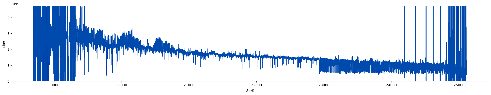
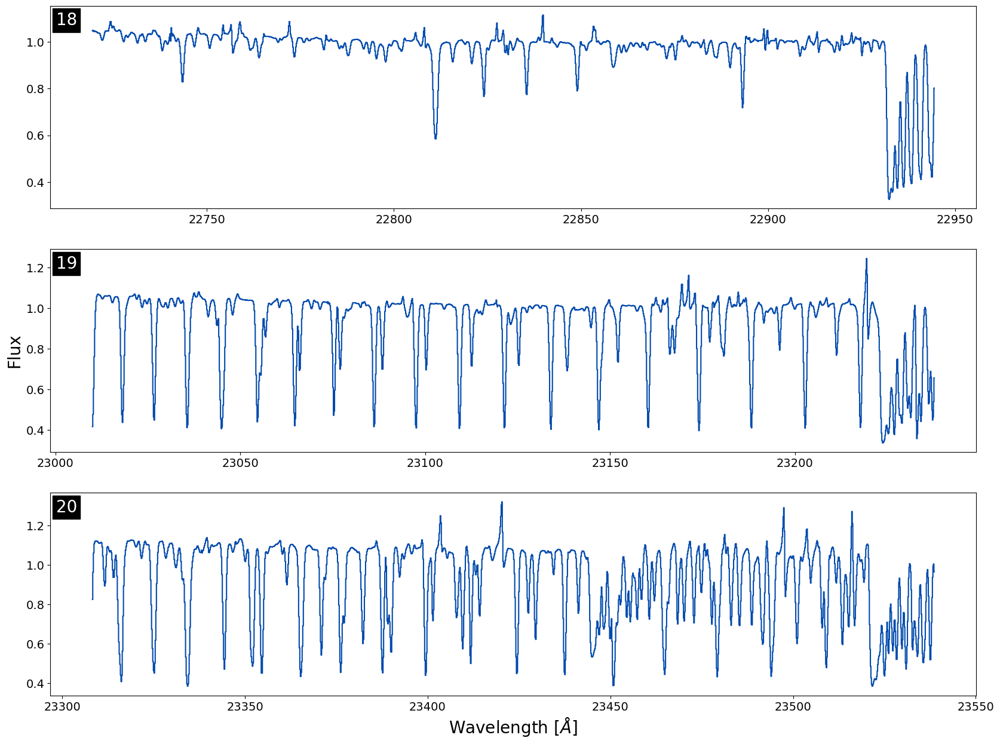
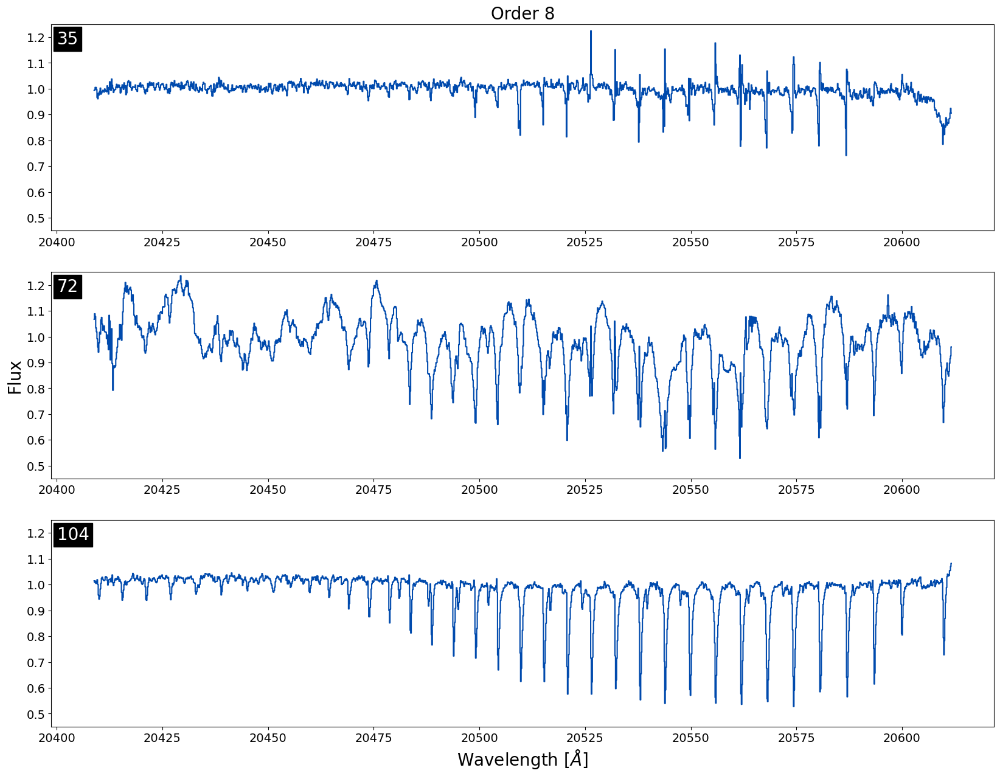
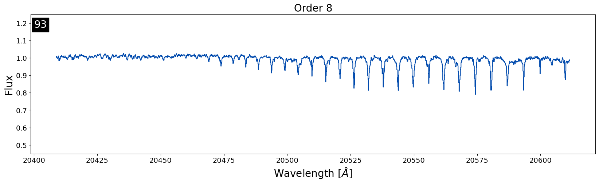
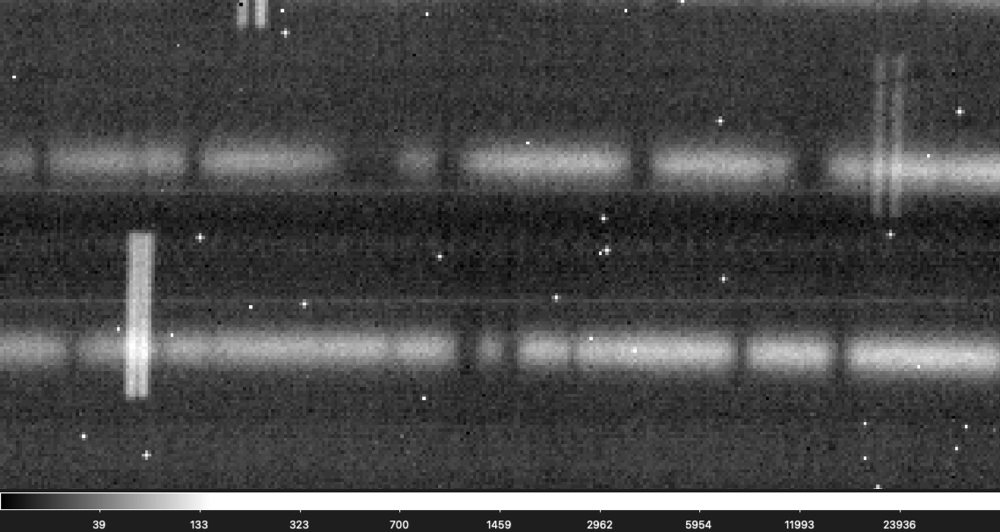
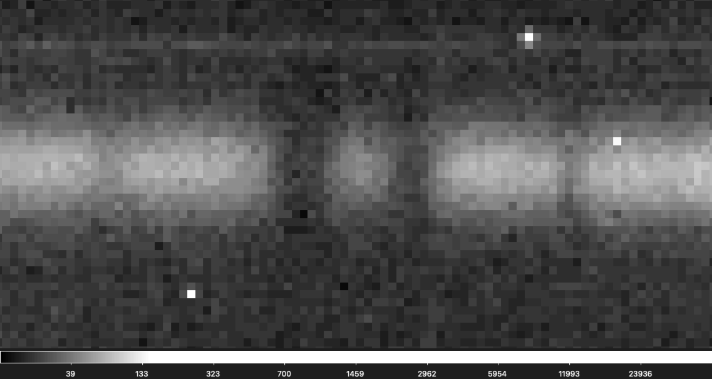

RRISA Access
All of the IGRINS data is stored using Box. RRISA holds all of the download links
you'll need to access any of the IGRINS data products. We support access to RRISA through
Python and provide tutorials for users to follow. We recommend that users install Anaconda,
a Python distributor and Python package manager. Directions for installing Anaconda on various operating
systems can be found here. Finally, we
suggest that users separate projects that use drastically different packages by utilizing
environments.
A more detailed example of creating a specific environment for a project can be seen in the Quick-Look tutorial
(when installing the developer version of muler).
Jupyter
All of the tutorials are available as Jupyter Notebooks. You can install jupyter in a specific environment
(after installing Anaconda) and open a jupyter kernal using the following lines of code in a terminal:
> source activate env-name
> conda install -c conda-forge notebook
> conda install -c conda-forge nb_conda_kernels
> jupyter notebook
RRISA Quickstart
In these code snippets, we will walk through how to import the RRISA files into Python using pandas
DataFrame objects, manipulate DataFrames in various ways to find subsets of data, and how to download
an IGRINS data product using Python. The full tutorial, with outputs, is available as a Jupyter Notebook
in the Tutorials folder on our GitHub.
Reading in a RRISA File
pandas provides the .read_csv function which can easily read in any of the RRISA files.
import pandas
#read in the cross matched superlog
xmatch_superlog = pd.read_csv('../RRISA_XMatch/xmatch_log.csv')
Downloading IGRINS Data Products
RRISA v3 structure is a little different than past versions of RRISA in terms of how download links are connected with file names. Instead of all the individual output files from the PLP having their own download link, each reduced file number (in RRISA Reduced or XMatch) is connected with a download link to a zipped file containing several output files from the PLP. To see all of the files included in the zipped file check out the RRISA Reduced page.
The 'FILE_URL' column in RRISA Reduced and XMatch holds the download link to the zip file for a particular file name (found in the 'FILENAME' column). All of the values in the 'FILE_URL' column are strings (URL links) that we can use to download zip files using Python. If you wanted to download a single zip file from UT Box using RRISA you can use the requests package. In the following example we download the first file in RRISA XMatch:
import requests
#example file name
#here we are adjusting the file name so it no longer has the .fits extension attached to it
file_name = (xmatch_superlog['FILENAME'].iloc[0]).split('.')[0]
#download link for file name
download_link = xmatch_superlog['FILE_URL'].iloc[0]
#start a requests session (allows you to download multiple files at once)
session = requests.Session()
#get information from the website (from the link we pass) by making a response object
response = session.get(download_link)
#we can check the status code to make sure our link was found succssfully
if response.status_code == 200:
#open a file on your computer to dump the file content from
with open(f"/path/to/directory/where/you/want/to/save/file/{file_name}.tar.gz", 'wb') as f:
#write the file
f.write(response.content)
#close the file--very important when writing multiple files at once!
f.close()
#print where the file was downloaded to
print(f"Successfully downloaded {file_name} to {/path/to/directory/where/you/want/to/save/file/}.")
You can also unzip the zip files using Python immediately after downloading them instead of doing it manually using the following example:
import shutil
#the unpack_archive function automatically detects the compression format of the zip file
#the second argument for the function here is the directory name for the unzipped file, we are just using the file name
shutil.unpack_archive(f"/path/to/directory/where/you/want/to/save/file/{file_name}.tar.gz", file_name)
A more detailed example for multiple file downloads (e.g. all the reduced files for a particular night) can be found in the full Quickstart tutorial on our GitHub.
DataFrame Manipulation
We can find the highest signal to noise spectra for each object using only a few lines of code.
First we sort the DataFrame using the 'SNRH_pix' column from highest to lowest value and then we drop all of
the rows that have a repeat object name. When we keep the first occurrence of each object name then we get
the highest SNR H-band observation (measured per pixel) for each object.
#sort H band SNR from highest to lowest
xmatch_superlog.sort_values(by=['SNRH_pix'], ascending = False, inplace = True)
#drop all but the first occurrence of each object name
xmatch_superlog.drop_duplicates(subset = ['MAIN_ID'], keep = 'first', inplace = True)
We can also set limits on specific values. In this example we require that the SNR in the H-band (measured per pixel) is
higher than 150.
#make a new DataFrame where the SNR H-band (measured per resolution element) spectra is greater than or equal to 150
subset = xmatch_superlog[xmatch_superlog['SNRH_res'] >= 150.]
SIMBAD provides not only a primary identifier for all of the objects, but a list of all identifiers (with some caveats) for each object. If we are looking for a particular object, but we aren't sure the name we have is the primary identifier for the object, we can search the 'IDS' column for our object name. Here is an example of how you would search for objects with "Tau" in the name. Note: this type of searching is case sensitive!
#it is important to convert the Series (subset['IDS']) into a string (.astype(str))
#so that way we do not get any errors from NaN values within the IDS column
subset_tau = subset[subset['IDS'].astype('str').str.contains('Tau')]
Using the 'OBJTYPE' column we can select between targets and standard stars. To select specifically targets you can use the following code:
#only keep TAR OBJTYPEs
targets_tau = subset_tau[subset_tau['OBJTYPE'].astype('str').str.contains('TAR')]
There are many different ways to pull out subsamples using RRISA, this is only one small example! By cross-matching IGRINS data with different catalogs we hope that users will be able to pull out subsamples of interest easier.
Quick-Look IGRINS Spectra Using muler
muler is an open-source community-developed
Python package for analysis of data from echelle spectrographs. muler makes it easy to look at reduced
IGRINS data!
muler has a very detailed and easy to follow installation page. As well as extensive documentation and tutorials which we highly recommend consulting when using RRISA. Both the the new and the old .spec_a0v.fits file format are compatible with the most recent version of muler. Any questions, bugs, or feature requests can be posted
to the muler GitHub.
Plotting 1D Reduced Telluric Corrected Spectra (.spec_a0v.fits)
The following tutorial quickly walks through how to plot the highest SNRK (in pixels) target spectrum in RRISA. There are two ways to read in an IGRINS spectrum: an entire band at once or one order in a band at a time. To read
in all of the orders at once we can use the IGRINSSpectrumList class:
from muler.igrins import IGRINSSpectrumList
import pandas as pd
#path to where the cross-matched log is located
xmatch_path = '/path/to/xmatch_log.csv'
#read in the cross-matched log using pandas
xmatch_log = pd.read_csv(xmatch_path)
#sort the log so the highest values of SNRK are at the top of the list
xmatch_log.sort_values(by = ['SNRK_pix'], ascending = False, inplace = True)
#remove any objects that appear multiple times
xmatch_log.drop_duplicates(subset = ['MAIN_ID'], keep = 'first', inplace = True)
#remove standard star entries (they will not have .spec_a0v.fits files)
xmatch_log = xmatch_log[xmatch_log['OBJTYPE'] == 'TAR']
#grab the filename
fn = xmatch_log['FILENAME'].iloc[0]
#the path to the data you want to plot
outdata_path = '/path/to/data/'
#the path to the file we want to plot
#Note: all of the names in 'FILENAME' are H band (.fits) so we alter the name to a real output file
file_path = f"{outdata_path}{(fn.split('.')[0]).replace('H', 'K')}.spec_a0v.fits"
#read in all the orders of K-band using IGRINSSpectrumList
spec_list = IGRINSSpectrumList.read(file_path)
#plot the entire K-band order using muler
#the .trim_overlap function trims the edges of the orders so they do not overlap
spec_list.trim_overlap(pivot = 0.85).plot(color = '#004aad')

At first look this spectra doesn't look very high signal-to-noise at all! Let's plot three orders in the CO-band region to look closer at the spectra. I've included some fancier plotting here just to demonstrate how you can add muler spectra to matplotlib axes to manipulate the visual output better:
import matplotlib.pylab as plt
#this will change the fontsize of the x- and y-tick labels
plt.rc('xtick', labelsize = 14)
plt.rc('ytick', labelsize = 14)
#select our orders to plot
orders = [18, 19, 20]
#generate the figure and axes to plot on
fig, axes = plt.subplots(3, 1, figsize = (20, 15), facecolor = 'white')
#initalized so we can move through our list of axes
i = 0
#for each order of interest
for order in orders:
#plot a normalized, trimmed order to a particular axis on the plot
spec_list[order].normalize().trim_edges().plot(color = '#004aad', ax = axes[i])
#add an order label in the top left hand corner of the plot
axes[i].text(0.006,0.905, f'{order}', transform = axes[i].transAxes, c = 'white', fontsize = 20, ma = 'center',
bbox = dict(facecolor='k', edgecolor='k'))
#add one to the iteration so we move to the next plot axis
i += 1
#add axes labels for x and y
axes[1].set_ylabel('Flux', fontsize = 20)
axes[-1].set_xlabel(r'Wavelength [$\AA$]', fontsize = 20)

Note: Use the .normalize() function with caution! Sometimes if the median values are close to 0 in an order the normalizing factor will become negative, flipping the spectra so emission looks like absorption (or vice versa). We always recommend plotting your orders un-normalized first to verify the direction of the lines.
We can see that the spectrum is very clean and has a strong CO in absportion! IGRINS spectra contain many lines, so quick-looking an entire band in one plot can make the data look messier than it actually is. We always recommend plotting order by order when looking for specific features or if you are worried about telluric residual presence.
Reduce Raw IGRINS Data Using The IGRINS Pipeline Package v3
Installation
There are now comprehensive instructions for how to install the Python 3 compatible version of the IGRINS PLP (v3) are available on the IGRINS PLP GitHub. Once the PLP v3 is installed you can download a night of raw IGRINS data using the links provided in the "RAW_URL" column in RRISA Raw, Reduced or XMatch. It is not possible to download a full night of data via Python using the links provided in RRISA Raw. Instead users will have to input the link into a browser and download the folder by selecting the three dot icon on the top right side of the page and selecting "Download". Note: All of the data products included in RRISA Raw are reduced using the IGRINS PLP v3.
Creating Recipe Logs
The IGRINS PLP v3 directions also include a section on crafting the recipe files used to reduce data. Recipe files are created on a per night basis and help the pipeline identify which file numbers belong to which reduction step (along with other ancillary information). While the IGRINS PLP v3 has a method for helping users craft recipe logs from the virtual log files (IGRINS_DT_Log_XXXXXXXX_[H,K].txt) from each night, often times the virtual log file will be missing information so users should fill in any missing information by hand. If you are only interested in reducing a single object from a given night, you can comment out other objects.
In order to run, the pipeline requires flat frames and sky frames (usually a single 300 second off exposure) for the night. Not all nights of raw data will include a sky exposure, in that case you can use a sky frame from a nearby night (ideally), an OFF frame (sky nod) from a target observation, or a frame from a long exposure of a low signal-to-noise dim target (K > 11 mag). Copy the sky frame(s; both H- and K-band) into the data directory, change the civil date in the file name to match the night of the data to reduce, and update the recipe log with the file number and exposure time of the sky frame. Less frequently nights will be missing the flat frames, in that case you can borrow frames from a nearby night.
There are eight columns in a recipe log file: OBJNAME, OBJTYPE, GROUP1, GROUP2, EXPTIME, RECIPE, OBSIDS, and FRAMETYPES. OBJNAME is the name of the object you are reducing for (flats and sky frames use FLAT and SKY). OBJTYPE describes the type of object: TAR, STD, FLAT, ARC, or DARK. GROUP1 is (usually) the first file number in the list of OBSIDs, it will be the file number for the reduced data products. GROUP2 is the GROUP1 for an associated standard you'd like to use in the reduction, if you leave this value as 1 it will default to the nearest standard listed in the recipe log. EXPTIME is the exposure time of each frame in seconds. RECIPE is the type of reduction to perform; options are: FLAT, SKY, AOV_AB, AOV_ONOFF, STELLAR_AB, STELLAR_ONOFF, EXTENDED_AB, or EXTENDED_ONOFF. OBSIDS is the list of file numbers to include in the reduction. FRAMETYPES is the type of frame associated with each OBSID (A/B or ON/OFF). A more detailed explanation of each of the columns in the recipe logs and the types of reduction recipes available check out the IGRINS PLP v3 wiki.
A very simple recipe file example might look like:
OBJNAME, OBJTYPE, GROUP1, GROUP2, EXPTIME, RECIPE, OBSIDS, FRAMETYPES
#to reduce the flat frames
FLAT, FLAT, 11, 1, 30.000000, FLAT, 11 12 13 14 15 16 17 18 19 20 21 22 23 24 25 26 27 28 29 30, OFF OFF OFF OFF OFF OFF OFF OFF OFF OFF ON ON ON ON ON ON ON ON ON ON
#to reduce the sky frame(s)
SKY, TAR, 103, 1, 700.000000, SKY, 103 102, B A
#target
KIC 6307537, TAR, 31, 41, 600.000000, STELLAR_AB, 31 32 33 34, A B B A
#companion standard
HR 9019 , STD, 41, 1, 100.000000, A0V_AB, 41 42 43 44, A B B A
#an extended target (like a planet)
Uranus, TAR, 86, 107, 300.000000, EXTENDED_ONOFF, 86 87 88 89, A B B A
#companion standard to extended object
HIP 18717, STD, 107, 1, 6.000000, A0V_AB, 107 108 109 110, A B B A
Running the Pipeline
Again, more detailed directions for running the pipeline are included in the IGRINS PLP v3 directions, but we will briefly describe the method here. To run the pipeline you'll need to have installed the pipeline, downloaded the raw data and put it in the the "indata" directory, and generated a recipe_log file for the night put in the "recipe_logs" directory (see above section). Each recipe process can be run by calling the pipeline script (igr_pipe.py) with the appropriate keywords. Below is a shell script (called ruh.sh in the PLP directory) that will run the relevant recipes for a user input date:
#!/bin/bash
#Simple script to fully run IGRINS PLP on any UTDATE
echo "Enter UTDATE:" #Prompt user to enter date
read UTDATE #Get date from user
#Clean up previous files
rm -r outdata/$UTDATE
rm -r calib/secondary/$UTDATE
rm -r calib/primary/$UTDATE
#Run PLP
python igr_pipe.py flat $UTDATE #Process flat
python ./igr_pipe.py register-sky $UTDATE #First pass at wavelength solution using sky frame (incase THAR lamps don't exist)
python ./igr_pipe.py flexure-setup $UTDATE #Setup files needed for flexure correction
python ./igr_pipe.py wvlsol-sky $UTDATE #Second pass at wavelength solution using OH sky emission
python ./igr_pipe.py a0v-ab $UTDATE --correct-flexure --mask-cosmics #Reduce A0V standard star data
python ./igr_pipe.py a0v-onoff $UTDATE --correct-flexure --mask-cosmics
python ./igr_pipe.py stellar-ab $UTDATE --correct-flexure --height-2dspec=100 --mask-cosmics #Reduce stellar sources nod on slit
python ./igr_pipe.py stellar-onoff $UTDATE --correct-flexure --height-2dspec=100 --mask-cosmics #Reduce stellar sources nod off
slit
python ./igr_pipe.py extended-ab $UTDATE --correct-flexure --height-2dspec=100 --mask-cosmics #Reduce extended sources nod on slit
python ./igr_pipe.py extended-onoff $UTDATE --correct-flexure --height-2dspec=100 --mask-cosmics #Reduce extended sources not off
slit
python ./igr_pipe.py divide-a0v $UTDATE #Reduce stellar sources nod off slit
echo "Done running"
echo $UTDATE
Note: The first time you run a shell script, it will need to be given permission using "chmod +x name.sh" and can then be run using "./name.sh".
To run the PLP you are not required to run all of the recipes included in the run.sh script above. For example, if you never reduce extended objects you can remove the lines for "extended-ab" and "extended-onoff" from the run.sh in your IGRINS PLP directory. For each night you must run the critical set-up recipes including "flat", "register-sky", "flexure-setup", and "wvlsol-sky".
The output files from running the PLP v3 are explained in detail here.
Troubleshooting Telluric Residuals
Although the flexure correction present in IGRINS PLP v3 significantly lessens the telluric residuals present most all of the reduced IGRINS data, in some cases the telluric residuals will have not improved when compared with the IGRINS PLP v2.2.0 reduction. In this section we are going to talk about the three most common causes for persistent telluric residuals and what you can do to reduce them in your data.
1. All reduced data in a night has a poor telluric correction
Below is an example of three different spectra with data taken on the same night (20170923; file number is in the top left of each plot) for the 8th order in K-band. We can see all of the spectra have relatively large telluric residuals in the same order which is not ideal.

This is the easiest type of telluric residual issue to troubleshoot because when all of the data in a night is affected, it indicates that the sky frame for the night is likely causing the issue. The easiest way to tell what is happening with the sky frame is by checking out the recipe file used to reduce the data. Often times the issue is that there was no sky frame taken for the night and instead a frame from the dimmest target in the night is being used as the sky frame. If a single frame from the dimmest object in the night is being used as the sky frame and the telluric residual issue persists, we recommend replacing the current sky frame with a sky frame from a nearby night if available. We would only recommend trying to replace sky frames with targets that have K-mag > 11 with relatively short exposure times < 500 seconds.
For this particular night, 20170923, multiple frames from a K ~ 10.6 mag target were used as the sky frames, but because the exposure time for these frames was long, 700 seconds, the SNR was too high for these frames to be used as sky frames. Instead a dimmer target from the same night, KIC 6191574 (K-mag ~ 11.6), with shorter exposure times should've been used for the sky frame.
2. Differences in Airmass
If not all of the objects in the night have noticeable telluric residuals, but your target has pesky smaller telluric residuals, the issue is likely the airmass difference between the target and standard star. The more atmosphere a objects light travels through, the deeper the lines from tellurics will be. If a target and standard star observed on the same night at close to the same time are close to the same airmass, we assume that the telluric lines will be roughly the same magnitude in depth. If a target and a standard start are in relatively different parts of the sky or are close together but observed too far apart in time, the atmosphere can change enough that the telluric lines will have different depths causing these pesky telluric residuals to stick around.
This is an example of an object where the airmass difference between the target and standard star was just enough to cause noticeable telluric residuals to stick around. The target and the standard were only observed 25 minutes apart in this case, and the difference in airmass was only 0.06. Usually, a difference of < 0.1 in airmass is the best we can do! So, we can expect these residuals in many of our reduced data products.

Removing these types of residuals is difficult because if there is not a standard star closer in airmass observed on the same night, there is not much that can be done. The only option would be to use a telluric model to correct for airmass differences which can be time consuming. The IGRINS team is currently working on a telluric model fitting code that could be used to remedy this issue.
3. There is a bad frame
If the sky frame is okay and the difference in airmass looks reasonable, the likely culprit for large telluric residuals is a bad frame. Bad weather (wind, clouds, dust, etc.) can make it difficult for telescopes to track objects across the sky while IGRINS is taking observations. Often bad frames are a result of the object not being centered on the slit during an observation which can cause small shifts in the wavelength from frame to frame. Frames like this are most likely to be found in observations taken at McDonald Observatory where the tracking is the least precise, but can appear in the IGRINS data from other telescopes as well.
This is also the hardest issue to diagnose because finding a bad frame out of a set can be really difficult since the change can be as subtle as a single pixel shift. Below is a gif flashing between two raw frames used in the reduction for an object. Can you see the subtle shift?

If you are having a hard time seeing the shift don't worry, it is not easy to find! It is easier to see in this gif that zooms into a small section of the above gif.

If you suspect there is a bad frame among your data you can first check "telluric_shift_H.csv" or "telluric_shift_K.csv" if you have reduced the data yourself using IGRINS PLP v3, if not reach out and we can send you these files! If the value in the third column is large for your file number (> 0.2) it likely means there is a bad frame with a telluric shift. You can then try to identify the bad frame by eye.
When you successfully find a bad frame among your raw data, you can remove the frame in the recipe file and re-reduce the data which will likely improve the residuals. However, removing a frame can reduce the SNR of your final spectra which is not ideal for all science applications. If you absolutely need to include all of the available frames in your reduction to reach a required SNR and there is a bad frame among them, please reach out to the IGRINS team and we will work with you on reducing the data.
Note: Bad frames are not only among target data, but can also be present in standard star reductions meaning bad frames can affect multiple targets in a night if the same standard is used multiple times. If you do not immediately see any issues with your target frames, be sure to check the standard star too!
Reach out!
If you notice any of your data has persistent telluric residuals and one of the above methods fixes your issue, please reach out to the IGRINS team via email or GitHub so we can note the issue in our logs to improve future reductions. If you are unable to diagnose the cause of the persistent telluric residuals in your data send us an email so we can work with you to resolve the issue!